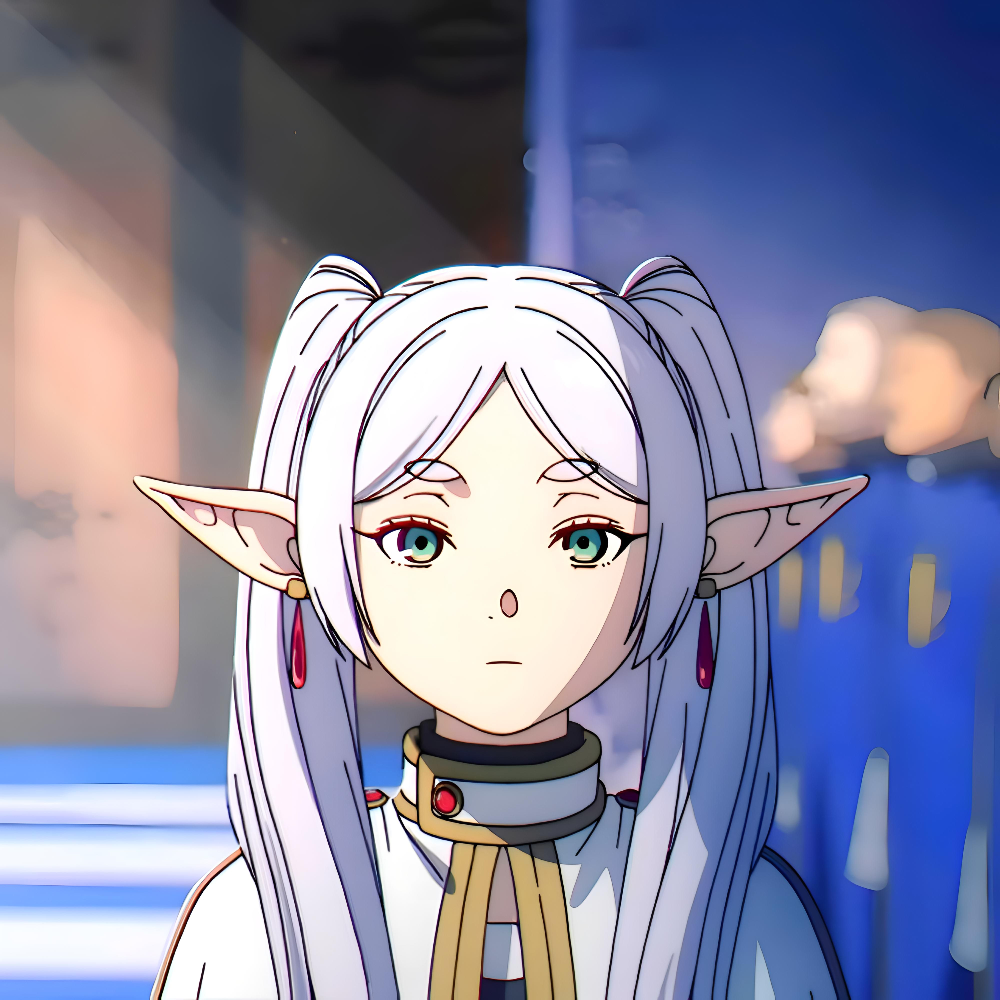
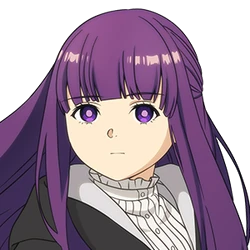
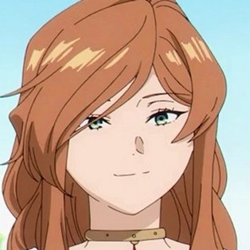

Quem somos
Bem-vindo à UniMag, uma universidade de magia que transcende os limites do ordinário. Em nosso majestoso campus, situado em um reino oculto, os mistérios da magia são desvendados por uma comunidade de aprendizes e mestres que respiram a essência encantada da sabedoria arcana. Nossa visão na UniMag é construir pontes entre o tangível e o etéreo, proporcionando um ambiente onde estudantes podem explorar os limites do desconhecido e desenvolver suas habilidades mágicas.
5 Motivos para estudar conosco
- Herança de Conhecimento Ancestral.
- Corpo Docente Excepcional.
- Ambiente Imersivo e Encantador.
- Variedade de Disciplinas Mágicas.
- Rede Global de Magia.
Corpo docente
O corpo docente da Universidade de Magia UniMag é uma congregação notável de mestres mágicos, cujas habilidades e conhecimentos transcendem as fronteiras do convencional. Composto por feiticeiros e feiticeiras renomados, cada membro do corpo docente traz consigo uma riqueza de experiência prática e teórica, enriquecendo o ambiente de aprendizado de forma única. Guiados por uma paixão incomparável pelo mundo mágico, esses mentores comprometem-se não apenas a transmitir sabedoria ancestral, mas também a inspirar os estudantes a explorar novos horizontes dentro das artes místicas. Na UniMag, o corpo docente não é apenas um grupo de professores, mas uma assembléia de guias dedicados a cultivar a próxima geração de magos e bruxas, tornando a jornada educacional uma verdadeira viagem rumo à maestria mágica.
| Professor | Aptidões | |
|---|---|---|
|  | Frieren | Friêrien, a imortal sábia, guia os estudantes na compreensão profunda da magia e da vida, enquanto Fern, a determinada, inspira-os a cultivar habilidades práticas e resiliência emocional em suas jornadas mágicas. |
|  | Fern | Fern, a determinada professora, inspira os estudantes a cultivar habilidades práticas e resiliência emocional em suas jornadas mágicas, guiando-os com sua abordagem prática e comprometida. |
|  | Flame | Maga Flame, como professora, incendeia o conhecimento mágico, guiando os estudantes no domínio das chamas arcanas, enquanto os inspira a explorar a paixão e a intensidade que a magia pode oferecer em suas jornadas educacionais. |